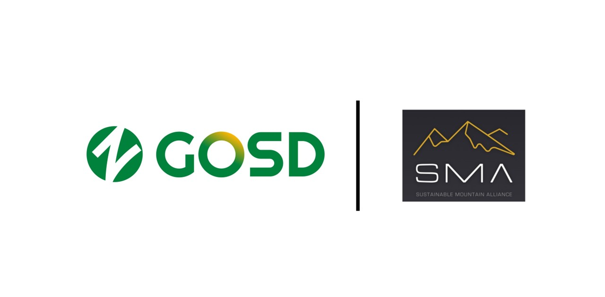

在2026年1月9日GOSD与ISPO联合举办的GOSD全球户外运动与旅游可持续目的地发展论坛上，GOSD与可持续山地联盟（Sustainable Mountain Alliance, 简称SMA）正式宣布达成战略合作伙伴关系。
此次合作，GOSD引入了全球首个基于ISO国际标准的山地赛事可持续认证体系，为中国赛事活动组织者提供了可衡量的发展框架，同时山地解决方案加速器也将在中国发掘面向户外运动与旅游领域可持续解决方案。此举将推动行业绿色低碳运营与安全保障升级，搭建起中外双向合作的桥梁，助力中国户外运动市场与全球资源互通互融，更标志着中国大众户外运动与旅游产业向着更可持续创新的未来迈向关键一步。
总部位于瑞士，是聚焦山地可持续发展的国际合作网络和智库，致力于推动山地旅游与户外运动在环境保护、社区共益与长期经济韧性之间取得平衡。联盟汇聚目的地管理机构、行业组织、企业与专家，通过制定与推广可持续标准与工具、分享最佳实践、开展能力建设与跨区域合作，帮助山地目的地在应对气候变化、生物多样性保护、资源管理与负责任运营等议题上形成可落地的行动路径，推动山地产业向更绿色、更包容、更高质量的方向发展。
GOSD X SMA于2026年1月9日《2026 全球户外运动与旅游目的地发展论坛》宣布达成战略伙伴关系。
SMA副主席莎拉·刘易斯Sarah Lewis曾担任国际滑雪联合会（FIS）秘书长长达22年。她与中国有着深厚的渊源，曾任2022年北京冬奥会筹备的高级顾问，并于2018年受聘为北京体育大学名誉教授。
莎拉指出，全球户外运动与旅游产业正在蓬勃发展，越来越多的人回归自然，享受户外运动的益处。她深情地说道："在中国，你们拥有一些最美丽的自然环境，值得强有力的守护，以便子孙后代能够继续像今天一样享受它们。"
她特别提到曾到访北京、河北、吉林和黑龙江等地，亲历了"世界雪日（World Snow Day）"和"SnowKidz"等青少年发展活动。她高度认可中国在可持续发展方面的创新领导力——这一点在2022北京冬奥会期间得到了充分展示。
莎拉宣布GOSD和SMA双方正式开启战略伙伴关系，共同探索一系列联合项目，为交流良好实践和灵感提供平台！
SMA联合创始人皮埃尔热尔莫Pierre Germeau详细介绍了这一全球首创的认证体系。Pierre是一位拥有20多年经验的可持续发展与法律专家，曾参与北京世界智力运动会等多个中国项目。
该标签于上月"国际山岳日"正式发布，是世界上第一个致力于山地活动的可持续性认证，建立在国际标准ISO 20121:2024之上。
SMA联合创始人英格丽博伊特勒Ingrid Beutler展示了于2024年推出的加速器项目。Ingrid曾任联合国体育促进发展与和平办公室主任，并参与了2008年北京奥运会的相关工作。
该加速器旨在识别、评估并支持面向户外运动与旅游领域的可持续解决方案，聚焦于六大"影响力垂直领域"：
通过GOSD与SMA的合作，分享全球范围内的最佳实践，开展能力建设与教育培训。借助山地解决方案加速器，增强户外活动的可持续表现并挖掘更多解决实际行业难点痛点的方案，未来能建立一个能识别并支持创新方案的影响力基金，进一步提升中国户外运动与旅游领域更加负责任、更可持续、更大的行业影响力。